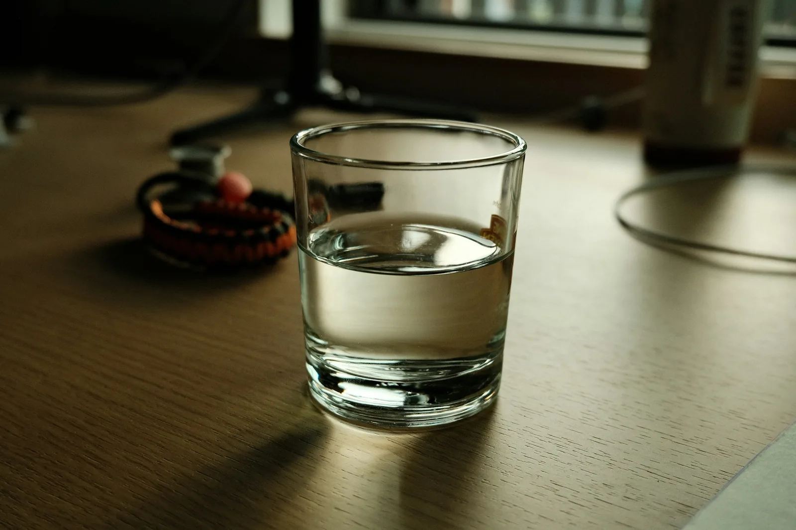

Diet and fluids
Living with a fluid limit: tips that help
Why the limit matters, what counts as fluid and small habits that make thirst easier to live with.

When your kidneys stop making much urine, the fluid you drink stays in your body until your next dialysis session. Too much makes the heart work harder, raises blood pressure and can cause swelling and breathlessness. It also means more fluid has to be removed during dialysis, which can leave you cramping, dizzy or washed out. A fluid limit is not a punishment; it is what makes each session gentler.
How much can I drink?
Your nephrologist sets your limit, often around 500 mL a day plus the amount of urine you still pass. Your nurse will also talk about interdialytic weight gain, the weight you put on between sessions. Each kilogram is roughly a litre of fluid. Many units suggest staying under 2 to 2.5 kg between sessions, but your own target may differ.
What counts as fluid
Anything that is liquid at room temperature counts. That includes water, tea and coffee, milk, buttermilk, soups, rasam, sambar, thin dal, curd, ice cream, jelly and ice cubes. Juicy fruits such as watermelon and oranges contain a lot of water too.
Tips patients tell us actually work
- Use a small cup or glass and sip slowly instead of gulping.
- Fill a bottle each morning with your daily allowance, and pour from it all day so you can see what is left.
- Freeze some of your allowance as ice chips, or try a few chilled grapes or apple slices.
- Suck a sour sweet, chew sugar-free gum or rinse your mouth with cold water without swallowing.
- Take tablets with food or soft foods, not with large drinks.
- Cut down on salt; salty food is the biggest cause of thirst.
- If you have diabetes, keep blood sugar steady, because high sugar makes you thirsty.
Weigh yourself every morning
Weigh at the same time each day, after using the toilet and before breakfast. Note the number in the Tidewell patient portal or a notebook. Seeing the trend helps you plan your day, and helps us adjust your dry weight.
Hot weather makes the limit harder. Stay in the shade, wear light cotton and plan outings for the cooler hours.
When to call us
Call your centre if you notice swelling in your ankles or around your eyes, shortness of breath when lying down or a weight gain of more than 3 kg between sessions. If you are struggling to breathe, call 108 straight away.
This article is general information. Follow the fluid limit agreed with your own care team.